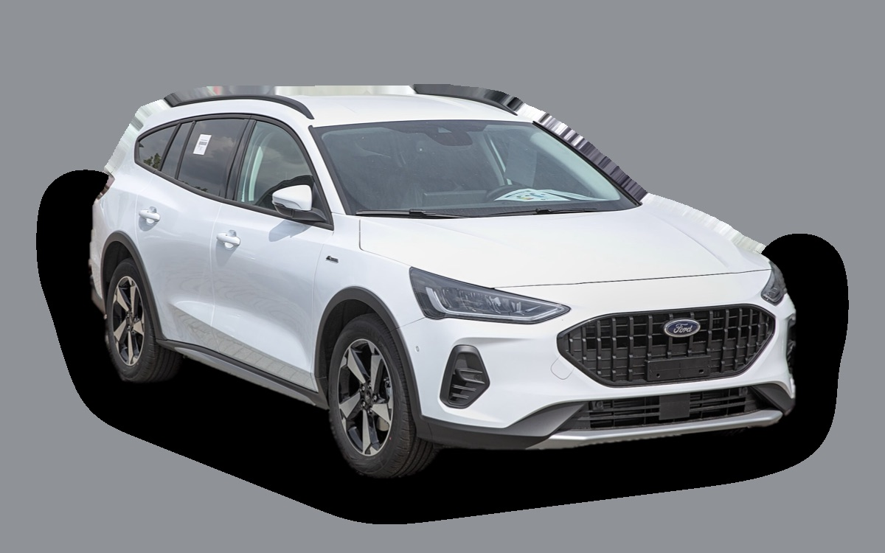
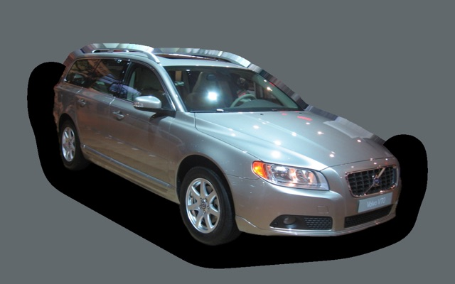
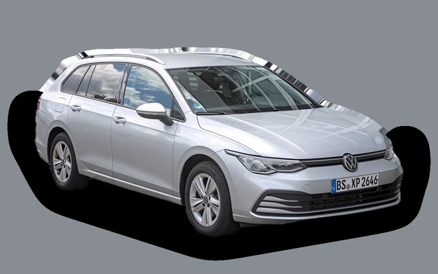
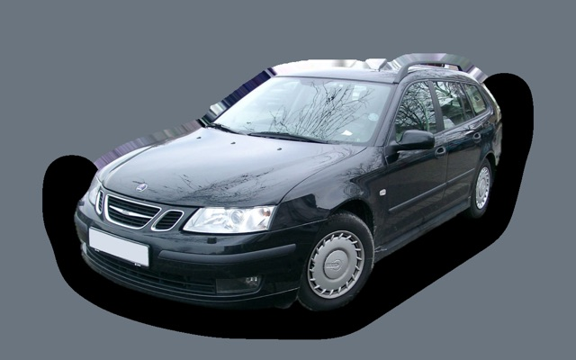
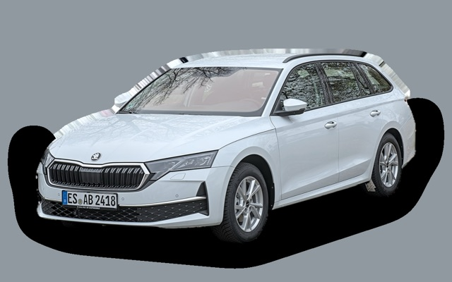
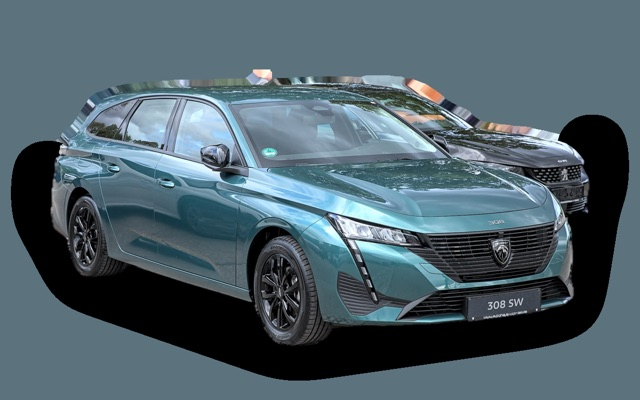
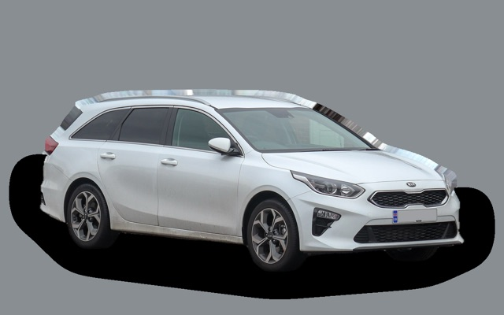

What does a Ford Focus Estate cost per month?
A 2022 Ford Focus Estate costs about SEK 3,514 a month, all in.
SEK 3,514per month, 2022 model
SEK 176,000price, 2022 model
SEK 315,900last new price
Cvalue grade (2022)


Monthly cost by model year
| Model year | Version in the calculation | Price | Per month | Grade |
|---|---|---|---|---|
| 2025 | 1.0 EcoBoost 125, Titanium | SEK 265,000 | SEK 4,311 | D |
| 2022 | 1.0 EcoBoost 125, Titanium | SEK 176,000 | SEK 3,514 | C |
| 2019 | 1.0 EcoBoost 125, Titanium | SEK 122,000 | SEK 3,242 | C |
Based on 5 years of ownership and 12,500 km a year, with fuel prices from 2026-10-22. The monthly cost includes depreciation, fuel, servicing and repairs, insurance and road tax.
How the cost splits for a 2022 car
- Depreciation: SEK 1,191/mo
- Fuel: SEK 1,228/mo
- Servicing and repairs: SEK 636/mo
- Insurance: SEK 389/mo
- Road tax: SEK 69/mo
Used prices in ads
| Model year | Median price | Ads | Typical mileage |
|---|---|---|---|
| 2024 | SEK 222,400 | 17 | 42,000 km |
| 2023 | SEK 219,000 | 26 | 47,000 km |
| 2022 | SEK 179,900 | 16 | 65,000 km |
| 2021 | SEK 159,900 | 10 | 86,000 km |
| 2020 | SEK 149,000 | 17 | 103,000 km |
| 2019 | SEK 125,000 | 46 | 119,000 km |
| 2018 | SEK 114,900 | 27 | 130,000 km |
The median price in Swedish ads by model year in October 2026 (source: Blocket). Ad prices are asking prices, and the final price may be lower.
Engines and versions
| Engine | Fuel | Power | 0–100 km/h | Consumption (WLTP) | Range | Model years | Extra cost |
|---|---|---|---|---|---|---|---|
| 1.0 EcoBoost 125 | Petrol | 125 hp | 10.5 s | 5.7 l/100 km | – | 2018–2025 | – |
| 1.5 EcoBlue 120 diesel | Diesel | 120 hp | 10.8 s | 4.6 l/100 km | – | 2018–2025 | +SEK 20,000 |
- Trim: Titanium, ST-Line (+SEK 6,000)
Facts
- Body
- Estate
- Model years
- 2018–2025
- Last new price
- SEK 315,900
- Boot
- 608 litres
- Euro NCAP
- 5 of 5 stars
- New-car warranty
- 3 years
- Reliability
- 3 of 5
- Comprehensive insurance, estimate
- SEK 6,700/yr
- Servicing, estimate
- SEK 3,800/yr
Common faults to watch for
- Timing belt running in oil needs early replacement (EcoBoost), repair about SEK 11,000
- Engine failure after belt failure, repair about SEK 55,000
- Particulate filter and AdBlue (diesel), repair about SEK 8,000
The faults apply to some engines and model years. The calculator works out the risk for the exact version you choose.
Pros and cons
Pro
Fun to drive with a big boot, and cheap to buy used.
Con
No longer made, so it's only available used.
Similar cars

Volvo V70SEK 3,540/mo as a 2013 model
Volkswagen Golf EstateSEK 3,542/mo as a 2023 model
Saab 9-3 SportCombiSEK 3,483/mo as a 2008 model
Skoda Octavia EstateSEK 3,556/mo as a 2023 model
Peugeot 308 SWSEK 3,594/mo as a 2023 model
Kia Ceed SWSEK 3,434/mo as a 2023 model
Updated 2026-10-28 · ad data Oct 2026